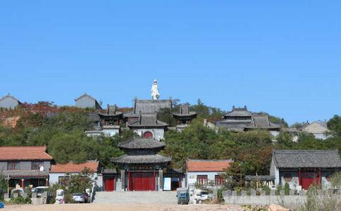

向往 2010年的6月14日中午11点57分坐上开往海城的列车。和佛友开始了心往已久的神圣
坐在列车上，内心有一种心驰神往的感觉！因为大悲寺的名声确实十分响亮，人们都把它作为传统
下了火车，在火车站前坐上直往毛祁镇的小客，我反复向司机和车上的人求证是否是到大悲寺？因为这个地方还有一个叫大悲古寺的，是
一路上车上的村民很友好的问东问西，也对我们的问题热心回答，看来民风很淳朴！这叫我想起了1975年2月4日的海城大地震，时间1975年2月4日19点36分，地点：我国辽宁省海城、营口县一带（北纬40度41分、东经122度50分）。强度：震级7.3级，震源深度16.21公里，震中烈度为9度强。 而由于发布了短临预报，震区各级政府组织群众预防，使全区人员伤亡共18308人，仅占7度区总人口数的0．22％，其中，死亡328人，占总人口数的0．02％，重伤4292人，轻伤12688人，轻重伤占总人口数的0.2％。
在这么大的地震面前，损失是很小的，创造了世界奇迹！这不能不说是政府组织有力，人民高度团结，佛
到了毛祁镇，车上的村民告诉我们，这道边的一排房子是居士们晚上休息的地方。我决定前去探询一下，看看我们是否也要住在这里？走进院门，传来了狗叫声，看看它们拴在院里，我们就大方的往里走。一边走一边看看哪里有居士可以答话。“阿弥陀佛，有人么？”随着我们的问候，一位大姐走了出来。我们连忙说明来意，大姐很高兴，细聊几句才知道她原来也是本溪的居士，来这里发心干活。她说：你们去山上住，我们女居士才住这。白天去干活，晚上住这里，不可以在寺院留宿。
这样一听，我们对大悲禅寺的严谨修持更加敬佩！果然名不虚传！！告别同修大姐，我们
但个人有个人的因果，他们这样写，为了生计也无可厚非，但是对禅寺也许抹点黑吧？呵呵。慈悲为怀吧，买卖自愿！！ 我朋友非要进去看看，我也不便说破。他是一个很仔细的人，我相信他不会买什么。果然，他绕了一圈出来，那个男老板也出来要走，我看出男老板是一脸的失落甚至有点为这个不消费的客人而恼火！！
我们原来准备要三步一拜的上去，但是现在看来是建设的场面，路上跑车，寺边也拉上了铁丝隔离墙。我们还是注意安全为主，打消了原来的想法。走到铁丝围墙的一个小房子边，看见一个女居士手拿木棒，驱赶着一个女人，告诉她：“快走，你这个精神病”！我很诧异，觉得不象我要去的大悲禅寺。那个女居士好象要解开我们的困惑说：某某师傅讲经，这个女人捣乱纠缠。那个女人反嚷道：你才精神病！是是非非我一时搞不清楚，但是多少有些迟疑！这是我要去的大悲寺么？也许我们居士太理想化了，认为一切都应该完美！其实，不完美的世界恰恰给我们在表法。许多人以个人知见怀疑和诽谤大悲寺，一个是没有智慧；另外一个是错过缘分，很可惜！
“ 阿弥陀佛， 妙祥师父在家么？”“阿弥陀佛，他在家。”回话的是坐在简易房里的女居士，看来很和蔼，一个和尚装扮的也一起附和，相貌也很慈祥庄重。多少打消了我的困惑。也许我们太在意一些表象了吧？！他们指示我们到前面的一个仿古建筑去报到。于是，我们踏大步向前走去。
走进那个接待处，里边已经有好几个人。好像刚刚新来的，在等待登记。一个年长且相貌很和善的居士向我们友好的打招呼，并叫我们放下行囊休息一下。我环顾四周，看见里边有监控器，叫我联想不已。寺院如何要配备这样的先进设备？从监视镜头可以看见门前大路的情况，还一些重要地方的场面。想想，这也是有利于工地安全和寺院管理，与时具进吧。
这个年长的居士，很会说话。看年龄应该有五六十岁的样子，但是说话的声音很年轻，长的也比较年轻，只是少露的白发可以知道他比较年长了。他在这里很适合。至少叫我们觉得很亲切很和善。我们拿出身份证办完登记手续。然后把身上带来的东西和食物都拿了出来，有朋友买的
和刚才几个新来的一起向居士的居所走去，沿坡而上，看见一排青砖的新修寺院。门前正在雕刻蟠龙阶梯，很壮观！一些工人在烈日下的阴凉处忙碌的工作着。看看他们黝黑的肩背，我被深深感动着，我们的劳动人民用汗水、甚至鲜血建设着这个国家的一切！劳动人民永远值得我们尊敬！
在居士住所的廊下，我们看到站着一个穿青衣的男居士在那里等我，看来他已经得到下面的通知，现代化的联络方式很重要。我们和他打过招呼，他带领我们走进居士统一的居所。居所高大宽敞，一间一间的休息室统一整齐。一排排双层铁床两边竖立。我们被他按空位安排好。他告诉我们不用担心个人物品安全，因为在这里从未发生丢失的事情。看看，
我们走出居所，从未完工的楼梯爬上去，来到二楼。从过道来到后院。后院是一大片工地，沿坡是一片劳动的景象。我们迎面走来一个穿青衣的小居士。我们忙向他顶礼，询问应该干什么活？他问明我们刚到，就笑着说：你们去拜拜佛吧。休息一会，晚上好上晚课！我们心里很高兴，因为我们对一切都感到新鲜。尤其先拜佛，更是欢喜异常！
我们向一排比较陈旧的建筑走去，看来那是老寺院。一个巨大的铁香炉后面是一尊
我们赶忙下拜，其他几个人不是很懂。我就根据所学，给他们示范拜佛的礼仪。拜过弥勒菩萨，我们向上边继续走。前面是好大的一片空地，看来就是大众拜忏的场地。我们走上后殿的台阶，面前正对着大雄宝殿！里边供着三圣像，我们在大殿的门口上，匍匐拜倒。以见圣容，里边供奉的是
我们又依次拜了
走在回廊里，我的 心完全沐浴在禅乐法雨中，
日夜劳碌，天天奔忙。贪心不断，